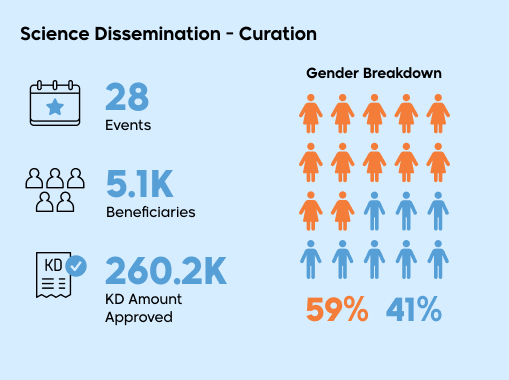
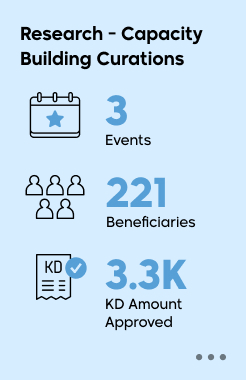

0

KFAS 2024 Highlights




مبادرة نحمیھا
Python (1st group) - المعلومات الجمعیة الكويتيه لتقنیة
Python (2nd group) - المعلومات الجمعیة الكويتيه لتقنیة
US Academy virtual program (Boston University)
US Academy virtual program (Embry Riddle Aeronautical University)
US Academy virtual program (University of Wisconsin)


Kuwait Institute for Scientific Research
Kuwait University
Australian University of Kuwait
Gulf University for Science and Technology
American International University
Ministry of Health
American University of Kuwait
Public Authority for Applied Educ...
Kuwait College of Science and Tech...
Kuwait Environment Protection Soclety
Kuwait Municipality
 23%
23%
 17%
17%
 9%
9%


Project
Principle Investigator (PI) institute
Domain
Developing Food Security Scenarios for Kuwait: An Integrated Assessment Applying A Dynamic Computable General Equilibrium Model.
KISR
Water & food security
Building Information Modeling in the Practice of Architecture/ Engineering Firms: An Adoption Roadmap in the Context of Kuwait.
Kuwait University
Digital transformation & 4th industrial revolution
The AI paradigm shift: Reshaping assessment strategies in higher education.
Australian University of Kuwait
Education

Fundamental Sciences(Chemistry)
Fundamental Sciences(Chemistry)
Applied Sciences(Hydrology)
Emerging Interdisciplinary sciences(Artificial Intelligence & Robotics)
Natural & Mathematical sciences
Biological Sciences
Engineering Sciences
(missing area he won in)
Social & Human sciences
In the field of (Education)
 15%
15%Pilot Study to Assess the Commercial Production of Silage of Greenery Residues as Animal Feed: Phase II
 35%
35%Development of Feed Formulation for Green Inland Production of White-leg Shrimp
 12%
12%Smart Technology Application to Improve Water Efficiency in Kuwait Mosques
 5%
5%Cup Cleaner Device
 65%
65%Pilot Project to establish the first wool processing center in Kuwait
 15%
15%Development of Commercial System for Onsite Treatment of Household’s Light Greywater
 25%
25%Feasibility study of innovative low-energy integrated system for desalination and cooling
 5%
5%Testing of the Latest Commercial Grade Perc Mono-Facial and Bifacial Solar Panels in Kuwait
 35%
35%A New Electric Vehicle Fast Charger with Integrated Distributed Generators
 100%
100%Green Valorization of food waste in Kuwait as a renewable energy source using anaerobic digestion
 70%
70%Kyphoplasty Biodegradable Kyphoplasty Balloon System Design and First in Man Study
 95%
95%Kuwait University CubeSat 1
 100%
100%Design KFAS Terrace made of recycled tires- Phase I
 10%
10%The Development of Kuwait’s Minamata Initial Assessment (MIA)
 100%
100%Feasibility study to Establish a Factory to Produce Camel Milk and its Derivatives
 100%
100%Establishing Kuwait Renewable Energy Center
 100%
100%White Paper on mitigating and combating sand encroachments in Kuwait
 100%
100%Develop a Plan for Establishing the National Space Research Center of Kuwait (NSRCK)
 30%
30%Antimicrobial Plastics
 50%
50%Using quantum technology to secure digital communications
 40%
40%Reinforced Concrete


 100%
100%Develop KFAS Strategy (2025-2029)
 100%
100%UpdatingPure - Legacy data
 100%
100%Upgrade the sound system in Auditorium
 99%
99%HR - New HR System Implementation


of companies contributed
KD in contributions collected
*KFAS Only excluding staff cost


 4Policy Research Papers
4Policy Research PapersPapers
Paper Title
Researcher
Date Published
Worldviews and Attitudes to Science in Kuwait: The Engagement Threshold Hypothesis
Martin W. Bauer, Mohammad Sartawi and Gordon Sammut
June 2024
The Climate Change Risk Reduction Trap: Low Carbon Spatial Economic Restructuring and Disaster Risk in Kuwait
Viktor Rözer, Sara Mehryar and Mohammad M. Alsahli
May 2024
Spatial Patterns and Urban Governance in Kuwait: Exploring the Links Between the Physical, the Socio-Economic and the Political
Nuno F. da Cruz, Dhari S. Alrasheed, Muneerah Alrabe and Abdullah al-Khonaini
April 2024
Greening Systems by Greening Religion: Eco-Islamic Values and Water-Energy-Nature Nexus Policies in Kuwait
Ganga Shreedhar, Davide Contu, Patricia Freitag, Aseel Takshe and Susana Mourato
March 2024